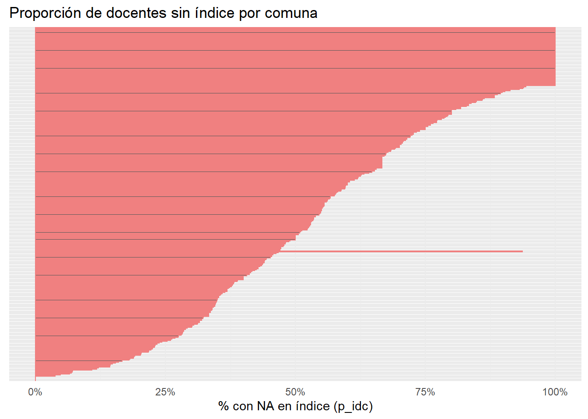
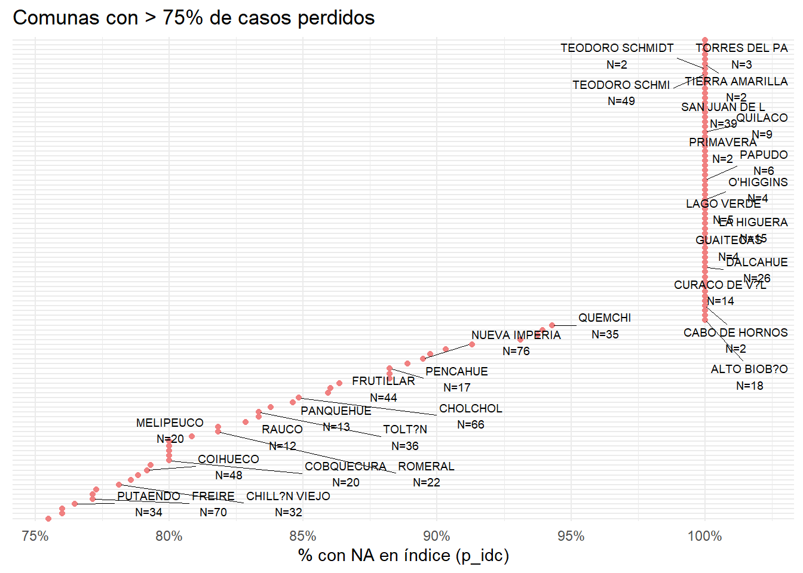
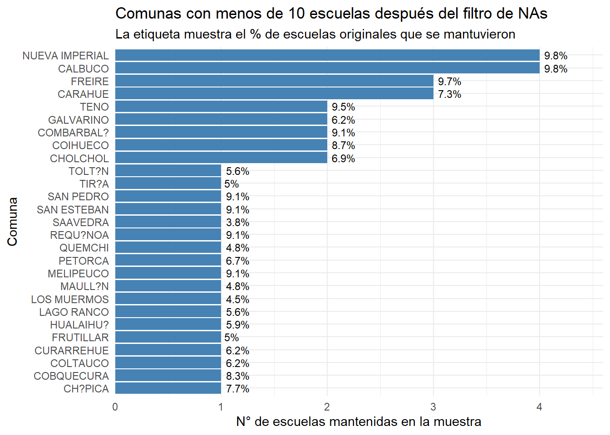
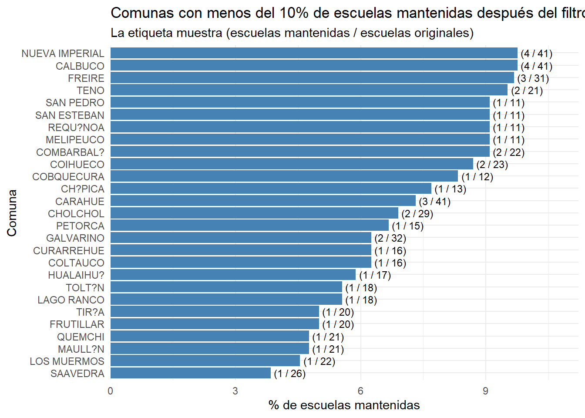
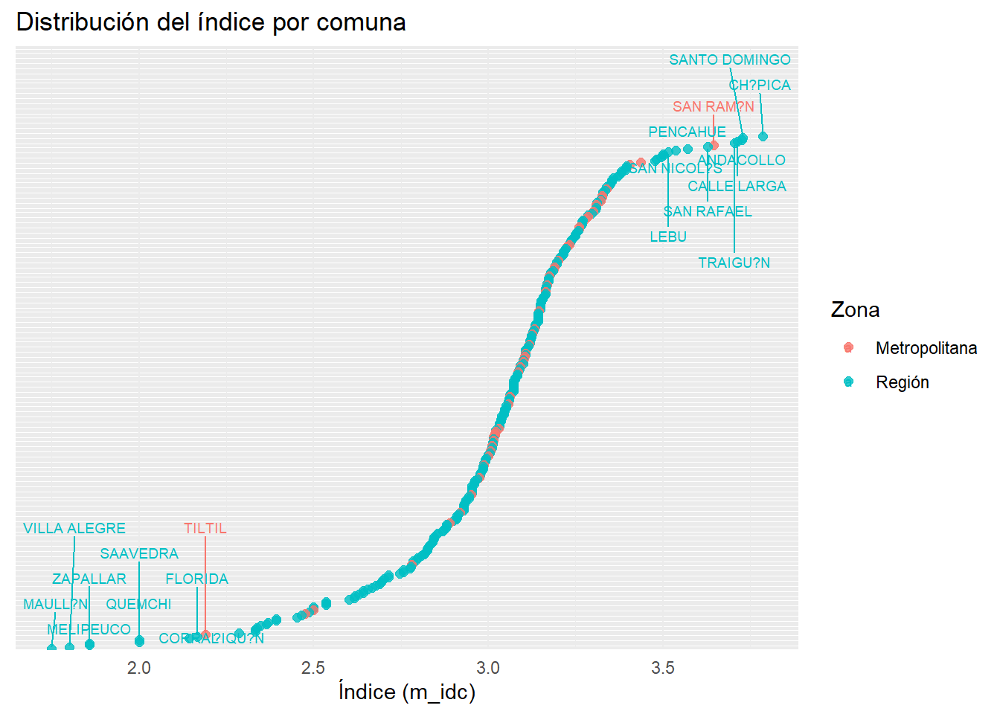
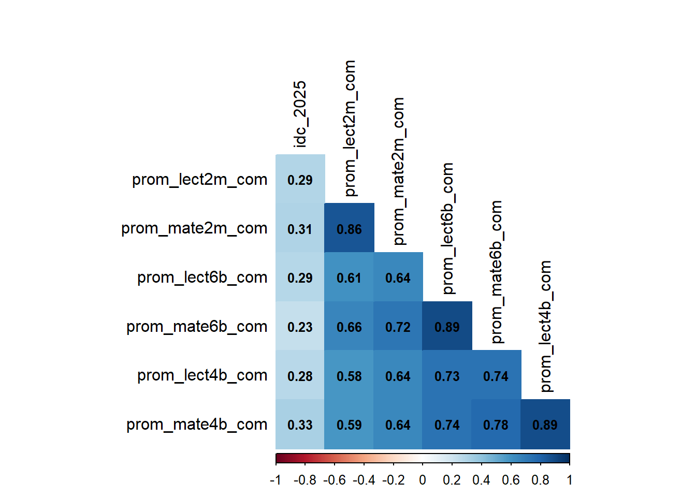

# Calcular proporción de NA por comunana_por_comuna<-docente|>group_by(m_id, m_name)|>summarise( total_docentes =n(), n_na =sum(is.na(p_idc)), prop_na =n_na/total_docentes, .groups ="drop")|>arrange(desc(prop_na))# Filtrar comunas con más de 75% de NAetiquetar<-na_por_comuna# Graficarggplot(na_por_comuna, aes(x =reorder(m_name, prop_na), y =prop_na))+geom_col(color ="#F08080")+coord_flip()+scale_y_continuous(labels =percent_format(accuracy =1))+labs( title ="Proporción de docentes sin índice por comuna", x =NULL, y ="% con NA en índice (p_idc)")+theme_minimal()+theme(axis.text.y =element_blank())

2.3 ¿Cuáles son las comunas >.90 NA?
Code
set.seed(123)# para reproducibilidad# Filtrar comunas con > 75% NAna_por_comuna<-docente|>group_by(m_id, m_name)|>summarise( total_docentes =n(), n_na =sum(is.na(p_idc)), prop_na =n_na/total_docentes, .groups ="drop")|>arrange(desc(prop_na))|>filter(prop_na>0.75)# Seleccionar aproximadamente 1 de cada 3 comunas para etiquetar (aleatorio)etiquetar<-na_por_comuna%>%slice_sample(prop =1/3)# Gráfico con etiquetas solo en los puntos seleccionadosggplot(na_por_comuna, aes(x =reorder(m_name, prop_na), y =prop_na))+geom_point(color ="#F08080")+geom_text_repel( data =etiquetar,aes(label =paste0(m_name, "\nN=", total_docentes)), size =2.5, nudge_y =0.02, segment.size =0.3)+coord_flip()+scale_y_continuous(labels =percent_format(accuracy =1))+labs( title ="Comunas con > 75% de casos perdidos", x =NULL, y ="% con NA en índice (p_idc)")+theme_minimal()+theme(axis.text.y =element_blank())

2.4 Atrición de profesores por escuelas
Code
# 1. Creación variable cantidad de escuelas por comuna (pre limpiar NAs) -------docente<-docente%>%group_by(m_id)%>%mutate(n_escuelas_orig_comuna =n_distinct(c_id))%>%ungroup()# 2. Creación de variable tipo de escuela# 2. Creación de variable número y porcentaje de NAs por escuela ---------------escuelas_stats_na<-docente%>%# Agrupamos por el identificador único de la escuelagroup_by(c_id)%>%# Calculamos n y % de NAssummarise( c_name =first(c_name), n_escuela =n(), n_NAs_escuela =sum(is.na(p_idc)), .groups ='drop')%>%mutate( prop_NAs_escuela =(n_NAs_escuela/n_escuela)*100)%>%select(c_id, c_name, n_escuela, n_NAs_escuela, prop_NAs_escuela)escuelas_problematicas<-escuelas_stats_na%>%filter(prop_NAs_escuela>90)
Code
# Histograma con estilo profesionalggplot(escuelas_stats_na, aes(x =prop_NAs_escuela))+geom_histogram( binwidth =5, fill ="#4E79A7", color ="white", alpha =0.8)+geom_vline( xintercept =mean(escuelas_stats_na$prop_NAs_escuela, na.rm =TRUE), color ="#E15759", linetype ="dashed", size =1)+labs( title ="Distribución de la Proporción de Valores Faltantes por Escuela", subtitle ="Cada barra representa un intervalo del 5% en la proporción de NAs", x ="Porcentaje de Valores Faltantes (NAs)", y ="Número de Escuelas", caption =paste0("Línea roja: Media (", round(mean(escuelas_stats_na$prop_NAs_escuela, na.rm =TRUE), 1), "%)\n","Total escuelas analizadas: ", nrow(escuelas_stats_na)))+scale_x_continuous(breaks =seq(0, 100, by =10))+theme_minimal()+theme( plot.title =element_text(face ="bold", size =14), plot.subtitle =element_text(size =10, color ="gray40"), axis.title =element_text(size =12), panel.grid.minor =element_blank(), panel.grid.major.x =element_blank())
Code
data.frame( Item =c("Total de escuelas", "Escuelas con 100% NA", "Atrición nivel escuela"), Valor =c(nrow(escuelas_stats_na)|>round(0),nrow(escuelas_problematicas)|>round(0),(nrow(escuelas_problematicas)/nrow(escuelas_stats_na))|>round(2)))|>kable()
Item
Valor
Total de escuelas
7710.00
Escuelas con 100% NA
5057.00
Atrición nivel escuela
0.66
2.5 Proporción de NAs por nivel educativo (4b, 6b y 2m)
Code
stats_nivel_educativo<-docente%>%group_by(p_grado)%>%summarise( n_total =n(), n_NAs =sum(is.na(p_idc)), n_completos =sum(!is.na(p_idc)), prop_NAs =(n_NAs/n_total)*100, prop_completos =(n_completos/n_total)*100, .groups ='drop')%>%# Ordenar por proporción de NAsarrange(desc(prop_NAs))stats_nivel_educativo%>%mutate( prop_NAs =round(prop_NAs, 1), prop_completos =round(prop_completos, 1))%>%select(p_grado, n_total, n_NAs, prop_NAs, n_completos, prop_completos)%>%kable( col.names =c("Nivel Educativo", "Total", "N° NAs", "% NAs", "N° Completos", "% Completos"), caption ="Estadísticas de valores faltantes por nivel educativo del profesor")
Estadísticas de valores faltantes por nivel educativo del profesor
Nivel Educativo
Total
N° NAs
% NAs
N° Completos
% Completos
4b
9873
5009
50.7
4864
49.3
6b
9739
4921
50.5
4818
49.5
2m
5905
581
9.8
5324
90.2
Code
ggplot(stats_nivel_educativo, aes(x =prop_NAs, y =fct_reorder(p_grado, prop_NAs)))+geom_bar(stat ="identity", fill ="coral")+geom_text(aes(label =paste0(round(prop_NAs, 1), "% (", n_NAs, " / ", n_total, ")")), hjust =-0.1, size =3.5)+labs( title ="Proporción de valores faltantes (NAs) por nivel educativo del profesor", subtitle ="La etiqueta muestra % de NAs (casos con NA / total casos)", x ="% de valores faltantes", y ="Nivel educativo")+theme_minimal()+scale_x_continuous(expand =expansion(mult =c(0, 0.2)))+theme( plot.title =element_text(size =12), plot.subtitle =element_text(size =10))
Un 50% de los profesores de básica, tanto de cuarto básico como de sexto básico son casos perdidos. En media solo un 10% lo son. Se sugiere continuar indagando en tipo de escuela y aplicación del cuestionario, agregando datos de escuelas del mineduc con el rbd.
2.6 Atrición de comunas por escuelas
Code
docentes_filtrado<-docente%>%filter(!c_id%in%escuelas_problematicas$c_id)# 5. Creación de variable cantidad y porcentaje de escuelas por comuna (luego de limpiar NAs)docentes_filtrado<-docentes_filtrado%>%group_by(m_id)%>%mutate(n_escuelas_post_filtro_comuna =n_distinct(c_id))%>%ungroup()comunas_stats<-docentes_filtrado%>%# Agrupamos por el identificador único de la comunagroup_by(m_id)%>%# Rescatamos los valores y el nombre usando first()summarise( m_name =first(m_name), # Rescatamos el nombre de la comuna n_escuelas_original =first(n_escuelas_orig_comuna), n_escuelas_mantenidas =first(n_escuelas_post_filtro_comuna), .groups ='drop')%>%# Calculamos el porcentaje de escuelas que se mantuvieronmutate( pct_escuelas_mantenidas =(n_escuelas_mantenidas/n_escuelas_original)*100)%>%# Reordenamos las columnas para mayor claridad (opcional)select(m_id, m_name, n_escuelas_original, n_escuelas_mantenidas, pct_escuelas_mantenidas)ggplot(comunas_stats, aes(x =pct_escuelas_mantenidas))+geom_histogram( binwidth =5, fill ="#4E79A7", color ="white", alpha =0.8)+geom_vline( xintercept =mean(comunas_stats$pct_escuelas_mantenidas, na.rm =TRUE), color ="#E15759", linetype ="dashed", size =1)+labs( title ="Distribución de la Proporción de Escuelas Faltantes por Comuna", subtitle ="Cada barra representa un intervalo del 5% en la proporción de NAs", x ="Porcentaje de Escuelas Faltantes (NAs)", y ="Número de Comunas", caption =paste0("Línea roja: Media (", round(mean(comunas_stats$pct_escuelas_mantenidas, na.rm =TRUE), 1), "%)\n","Total comunas analizadas: ", nrow(comunas_stats)))+scale_x_continuous(breaks =seq(0, 100, by =10))+theme_minimal()+theme( plot.title =element_text(face ="bold", size =14), plot.subtitle =element_text(size =10, color ="gray40"), axis.title =element_text(size =12), panel.grid.minor =element_blank(), panel.grid.major.x =element_blank())

2.7 Comunas con Atrición >90 de escuelas
Code
library(forcats)# Cambiar variable en filter (pct_escuelas_mantenidas o n_escuelas_mantenidas) para ver los datoscomunas_plot<-comunas_stats%>%filter(pct_escuelas_mantenidas<10)# Generamos el gráficoggplot(comunas_plot, aes(x =pct_escuelas_mantenidas, y =fct_reorder(m_name, pct_escuelas_mantenidas)))+geom_bar(stat ="identity", fill ="steelblue")+geom_text(aes(label =paste0("(", n_escuelas_mantenidas, " / ", n_escuelas_original, ")")), hjust =-0.1, size =3)+labs( title ="Comunas con menos del 10% de escuelas mantenidas después del filtro de NAs", subtitle ="La etiqueta muestra (escuelas mantenidas / escuelas originales)", x ="% de escuelas mantenidas", y ="Comuna")+theme_minimal()+scale_x_continuous(expand =expansion(mult =c(0, 0.15)))

3 Comparación de muestras IDC 2024
3.1 Resumen de Correspondencia entre comunas
Code
mother_data_2024<-readRDS("../data/proc_data/private_data/2024_mother_data.rds")mother_data_2025<-readRDS("../data/proc_data/private_data/2025_mother_data.rds")indice_2024<-read_excel("../data/proc_data/public_data/2024_idc_v1.xlsx")indice_2025<-read_excel("../data/proc_data/public_data/2025_idc_v1.xlsx")# 2. Comparación de muestra de comunas -----------------------------------------# Seleccionar ID y variable de índice de cada añobase_2024<-indice_2024%>%select(id_comuna, c_indice, nombre_comuna)%>%mutate(m_id =as.character(id_comuna))%>%select(m_id, c_indice, nombre_comuna)%>%rename(indice_2024 =c_indice, m_name =nombre_comuna)base_2025<-indice_2025%>%mutate(m_id =as.character(m_id))%>%select(m_id, m_idc, m_name)%>%rename(indice_2025 =m_idc)# Unir ambas bases por m_idcomparacion<-full_join(base_2024, base_2025, by ="m_id", suffix =c("_2024", "_2025"))# Clasificar según presencia de NAresultado<-comparacion%>%mutate( estado =case_when(is.na(indice_2024)&is.na(indice_2025)~"NA en ambos años",is.na(indice_2024)&!is.na(indice_2025)~"NA solo en 2024 (comuna ganada)",!is.na(indice_2024)&is.na(indice_2025)~"NA solo en 2025 (comuna perdida)",TRUE~"Presente en ambos"))# Tabla resumentabla_resumen<-resultado%>%dplyr::count(estado)tabla_resumen|>kable()
estado
n
NA en ambos años
36
NA solo en 2024 (comuna ganada)
8
NA solo en 2025 (comuna perdida)
15
Presente en ambos
286
3.2 Lista de Comunas ganadas y perdidas
Code
#Comunas ganadasresultado_na<-resultado%>%filter(estado!="Presente en ambos")%>%select(m_name_2024, estado)%>%arrange(estado)resultado_na|>kable()
m_name_2024
estado
Cochamó
NA en ambos años
Puqueldón
NA en ambos años
San Juan de la Costa
NA en ambos años
Palena
NA en ambos años
Lago Verde
NA en ambos años
Guaitecas
NA en ambos años
O’Higgins
NA en ambos años
Tortel
NA en ambos años
Río Ibáñez
NA en ambos años
Laguna Blanca
NA en ambos años
Río Verde
NA en ambos años
San Gregorio
NA en ambos años
Cabo de Hornos
NA en ambos años
Primavera
NA en ambos años
Timaukel
NA en ambos años
Torres del Paine
NA en ambos años
Camiña
NA en ambos años
Colchane
NA en ambos años
Huara
NA en ambos años
Camarones
NA en ambos años
Putre
NA en ambos años
General Lagos
NA en ambos años
Portezuelo
NA en ambos años
Sierra Gorda
NA en ambos años
Ollagüe
NA en ambos años
La Higuera
NA en ambos años
Río Hurtado
NA en ambos años
Juan Fernández
NA en ambos años
La Cruz
NA en ambos años
Placilla
NA en ambos años
Pumanque
NA en ambos años
Vichuquén
NA en ambos años
Quilaco
NA en ambos años
San Rosendo
NA en ambos años
Teodoro Schmidt
NA en ambos años
Ercilla
NA en ambos años
Futaleufú
NA solo en 2024 (comuna ganada)
Cobquecura
NA solo en 2024 (comuna ganada)
Tierra Amarilla
NA solo en 2024 (comuna ganada)
Chañaral
NA solo en 2024 (comuna ganada)
Coinco
NA solo en 2024 (comuna ganada)
La Estrella
NA solo en 2024 (comuna ganada)
Pencahue
NA solo en 2024 (comuna ganada)
San Rafael
NA solo en 2024 (comuna ganada)
Dalcahue
NA solo en 2025 (comuna perdida)
Queilén
NA solo en 2025 (comuna perdida)
Puerto Octay
NA solo en 2025 (comuna perdida)
San Pablo
NA solo en 2025 (comuna perdida)
Chaitén
NA solo en 2025 (comuna perdida)
María Pinto
NA solo en 2025 (comuna perdida)
Treguaco
NA solo en 2025 (comuna perdida)
Alto Del Carmen
NA solo en 2025 (comuna perdida)
Paihuano
NA solo en 2025 (comuna perdida)
Canela
NA solo en 2025 (comuna perdida)
Papudo
NA solo en 2025 (comuna perdida)
Navidad
NA solo en 2025 (comuna perdida)
Paredones
NA solo en 2025 (comuna perdida)
Alto Biobío
NA solo en 2025 (comuna perdida)
Los Sauces
NA solo en 2025 (comuna perdida)
3.3 Correlación de los índices educacionales en ambos años
Code
# Filtrar solo comunas presentes en ambos añosdatos_completos<-resultado%>%filter(!is.na(indice_2024)&!is.na(indice_2025))# Calcular correlaciónr_valor<-cor(datos_completos$indice_2024, datos_completos$indice_2025, use ="complete.obs")%>%round(2)# Graficarggplot(datos_completos, aes(x =indice_2024, y =indice_2025))+geom_point(color ="#6495ED", alpha =0.7)+geom_smooth(method ="lm", se =FALSE, color ="darkred", linetype ="dashed")+annotate("text", x =Inf, y =-Inf, hjust =1.1, vjust =-1, label =paste0("r = ", r_valor), size =5, color ="black")+labs( x ="Todos los estamentos 2024", y ="Profesores 2025", title ="Relación Adopción digital escolar por comuna 2024 y 2025", caption ="Las escalas difieren porque en el año 2024 transformamos la escala de 0 a 1")+theme_minimal()

4 Comportamiento de los valores del Índice
4.1 Distribución de puntajes
Code
# Añadir variable "rm"idc_rm<-idc%>%mutate(rm =ifelse(r_id==13, "Metropolitana", "Región"))# Usar la misma base para top_bottomtop_bottom<-idc_rm%>%arrange(desc(m_idc))%>%slice_head(n =10)%>%bind_rows(idc_rm%>%arrange(m_idc)%>%slice_head(n =10))# Plotggplot(idc_rm, aes(x =m_idc, y =reorder(m_name, m_idc), color =rm))+geom_point(size =2, alpha =0.8)+geom_text_repel( data =top_bottom,aes(label =m_name, color =rm), # <- importante: asegurar que el color esté también en esta capa size =2.5, max.overlaps =50, direction ="y")+labs( title ="Distribución del índice por comuna", x ="Índice (m_idc)", y =NULL, color ="Zona")+theme_minimal()+theme(axis.text.y =element_blank())

5 Correlación con SIMCE
Code
# SIMCEidc_simce<-merge(select(idc,m_id, idc_2025=m_idc), simce_comuna_2m, by ="m_id", all.x =TRUE)idc_simce<-merge(idc_simce, simce_comuna_6b, by ="m_id", all.x =TRUE)idc_simce<-merge(idc_simce, simce_comuna_4b, by ="m_id", all.x =TRUE)# Selecciona sólo columnas numéricas y sin NAs para correlaciónidc_simce_num<-idc_simce%>%select(-m_id)%>%na.omit()# elimina filas con NA para que rcorr funcione# Alternativamente, si quieres mantener filas con NA, puedes imputar o eliminar columnas con NA# Calcula la matriz de correlación y p-valuesrcorr_res<-rcorr(as.matrix(idc_simce_num))# Haz el corrplotcorrplot(rcorr_res$r, method ='color', type ='lower', tl.col ="black", bg ="white", addCoef.col ='black', number.cex =0.8, diag =FALSE)
6 Correlación con otros índices
Code
idc_others<-merge(select(idc, m_id, idc_2025=m_idc), idc_2024, by ="m_id", all.x =TRUE)idc_others<-merge(idc_others, idh_comunal, by ="m_id", all.x =TRUE)idc_others<-merge(idc_others, pobreza_multi_comunal, by ="m_id", all.x =TRUE)idc_others<-merge(idc_others, conectividad_comunal, by ="m_id", all.x =TRUE)idc_others<-idc_others|>select(-m_id)corrplot(rcorr(as.matrix(idc_others))$r, p.mat =rcorr(as.matrix(idc_others))$P, method ='color', type ='lower', insig='blank', tl.col ="black",bg="white",na.label="-", addCoef.col ='black', number.cex =0.8, diag=FALSE, sig.level =0.05)